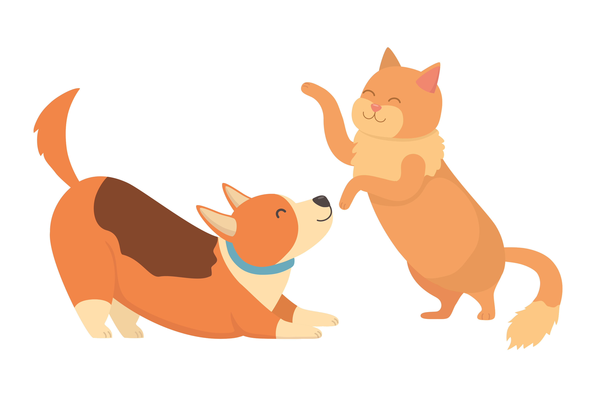
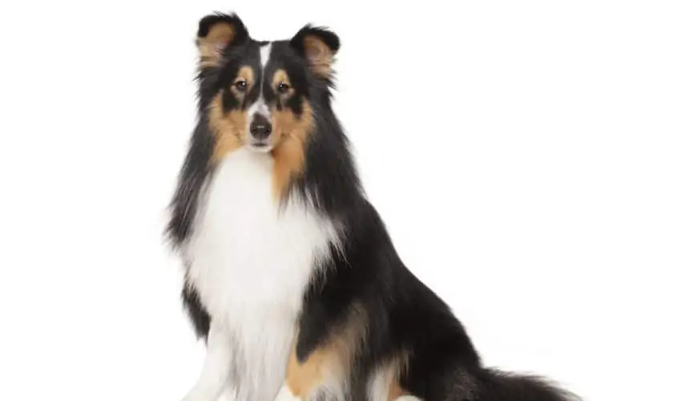

Welcome to this website where you can find detailed information about cat and dog breeds. Here, you can discover various breeds of cats and dogs, learn about their characteristics, care, and other fascinating details. Whether you are considering becoming a cat or dog owner or just want to learn more about your current pet, you've come to the right place. We hope you have a great time exploring this platform, which is a meeting point for animal lovers!

Joke
Medium (29)
High (74)
Playfulness
Low (4)
Medium (26)
High (72)
Friendliness
Low (6)
Medium (20)
High (76)
Care needs
Low (46)
Medium (34)
High (19)
Noise level
Low (40)
Medium (39)
High (24)
British Longhair
Napoleon Cat
American Shorthair Cat
Ankara Cat
Siberian Cat
Himalayan Cat
Scottish Fold Cat
Sphynx Cat
Iranian Cat
Joke
Medium (29)
High (74)
Playfulness
Low (4)
Medium (26)
High (72)
Friendliness
Low (6)
Medium (20)
High (76)
Care needs
Low (46)
Medium (34)
High (19)
Noise level
Low (40)
Medium (39)
High (24)
German Spitz
Samoyed
Japanese Akita

Shetland Sheepdog
Shiba Inu
Shar Pei
Schipperke
Siberian Husky
Maltipoo
Everything About Cat Breeds & Characteristics
Kittens belonging to the feline family are generally furry, small, and carnivorous mammals. Their common characteristics are their cute appearance and docile behavior. With their flexible bodies, soft fur, and marvelous patterns, they captivate the interest of many. Cats, one of the smallest species in the feline family, are usually kept as pets by humans for their companionship and ability to hunt household pests. They are simply referred to as "cats" without the need to distinguish them from other small cats within the same family.
Cats are anatomically very strong animals. Their body structure is flexible, and their reflexes are fast. Their sharp claws make them skilled hunters. They are successful at killing small animals with their fast reflexes, sharp claws, and teeth. These attributes make them similar to other large cats within the same family. However, they have a very sensitive ear structure. So much so that they can instantly hear very faint and very high-pitched sounds that human ears cannot perceive thanks to their sensitive ears. Like most other mammals in the same family, cats have weaker color vision than humans. However, they can see nearby environments in the dark with their eyes. Their sense of smell is incredibly developed and, therefore, very strong.
It is claimed that there are more than 70 cat breeds in the world. The number of cat breeds recognized by various international organizations such as CFA, TICA, and FIFE may differ. According to the International Progressive Cat Breeders Alliance (IPCBA), there are 73 breeds, the Cat Fanciers' Association (CFA) recognizes 44 breeds, and the Fédération Internationale Féline (FIFE), based in Luxembourg, recognizes 43 breeds.
Although cats have the ability to hunt on their own in nature, they are social beings. Communication with other cats involves the release of scents, pheromones, and their unique body language, as well as meowing, purring, vocal tremors, hissing, growling, and guttural sounds.
This vocal and olfactory communication aids them greatly in mating during their breeding periods. Cats have a high reproductive rate. When properly controlled, they can reproduce and be registered as breed animals. However, uncontrolled breeding can lead to an abundance of stray cats. For instance, in the United States, the number of stray cats has reached almost 60 million. What about worldwide? When considering the failure of controlled breeding through spaying and neutering of domestic cats, along with the abandonment of cats acquired on impulse, unfortunately, this figure reaches billions.
The domestication of cats can be traced back to ancient Egypt. Cats were considered sacred and worshipped in ancient Egypt.
In a genetic study conducted in 2007, it was revealed that domestic cats evolved from African wildcats in the Middle East region before 8000 BC. Today, according to the popular science magazine Scientific American, cats are the world's most popular pets.
Everything About Dog Breeds and Dog Types
Dogs, with over 400 breeds in terms of appearance and size, are one of the species that have survived
from 12,200 BC to the present day. Dogs, as a subspecies of the wolf, also known as the Gray Wolf,
native to North America and Eurasia, are related to foxes and jackals. Like cats, dogs are a species that
has spread to the widest geography in the world. Along with cats, they are one of the two most commonly
kept pets in the world. According to an article published in New York in 2001 entitled "A Surprising New
Understanding of the Origin, Behavior and Evolution of Dogs," their population is estimated to be over
400 million.
Dogs have a very long history. For more than 12 thousand years, they have served as a hunter, a protector
and a friend that humans have needed in their work. Over this long period, different breeds have evolved
to meet different needs. When looking at the first dogs in history, it is seen that their visual
abilities are very high and their sense of smell is sharp. These features made them excellent hunting
dogs and provided great convenience for humans in fulfilling everything they needed. Over time, changes
in the world and needs caused their genetics to change and different dog breeds emerged. For example, approximately
7,000 to 9,000 years ago, when farm animals were domesticated, dogs started herding them and underwent
artificial selection in this direction.
This evolution inevitably made their functions and perceptions different from society to society. For
example, when we look at Ancient Egypt, dogs were considered sacred. Today, they are used as guards in
many countries and as draft animals in some countries. In Europe, dogs are generally kept as housemates.
On the other hand, dogs preferred for helping the disabled and search and rescue are trained for more
specific tasks and used as police dogs. The fact that dogs are preferred in such diverse areas has led
to pet shop products and services for them becoming a billion-dollar industry.
About Us
We are delighted to welcome you to this platform, where we provide information about cat and dog breeds. Our aim is to explore the unique world of our beloved pets, fostering better understanding and care for our feline and canine friends. Guided by experienced experts, we share intriguing insights into the distinctive characteristics and needs of these adorable companions.
On our website, you will find not only fascinating facts about cats and dogs but also practical tips on health, training, and care. We genuinely care about the happiness and well-being of our furry friends, continuously striving to deepen our understanding of their lives. Together, we embark on an exciting journey into the world of cats and dogs and share the joy of embracing a loving pet.
If you're eager to learn more about cat and dog breeds and explore the wonders of their lives, we invite you to join us on this delightful journey. We look forward to having you as a part of our community, where loyalty and love from our beloved pets create a heartwarming world.


.jpg)
.jpg)
.jpg)
.jpg)